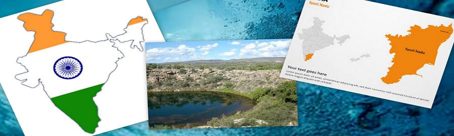
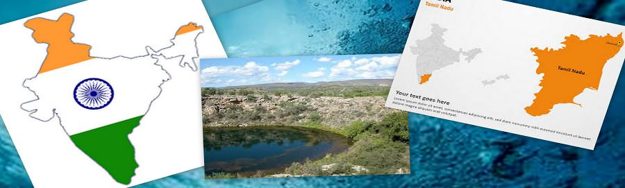

案例分析
从过去的学习，提高未来...


 


案例研究 - 意大利
意大利省铲球水文灾害与地理信息系统和遥感：
博尔扎诺自治省位于意大利北部和共享与奥地利的边界。随着7400平方公里的表面，博尔扎诺主要是山区，其海拔范围为200至3800多米的海拔（ASL）。博尔扎诺的30部是全省机构负责解决自然环境与人类需求之间的矛盾。具体来说，30部管理的建设和维护的工程措施的水文和地质灾害，如淤地坝和放大器的缓解;水渠。
为此，在过去几年里，全省已设计并实施了一些GIS地理数据库，包括通用的数据集，如数字高程模型，地表覆盖，土地利用图，和正射影像。其中还列出了更加具体的数据集，如历史悠久的洪水和泥石流洪水事件的库存和水工建筑物已经到位的库存。被称为设计的信息系统的水文地质危害和风险（IHR）的具体框架项目，由欧盟委员会主办的除其他外，作出必要的风险管理访问博尔扎诺的规划者在一个简单的标准化方式的信息。
由于IHR项目的一部分，系30的流域系统信息（流域30）应用程序被设计来简化提取，在流域层面，最相关的信息，为规划新的液压结构的目的。
由于大多数部门的洪水管理人员已经熟悉的ArcGIS Desktop软件平台，盆地30被实现为ArcGIS Desktop的扩展。通过流域30所需的输入数据是所有的空间和包含了土地利用，地质和形态以及有关水文网络更具体的层次，水工结构已经到位，和水文灾害普通层。
案例研究 - 非洲
非洲水资源数据库使用GIS和遥感：
非洲水资源数据库（奖），包括旨在促进负责任内陆水生资源管理与粮食安全的总体目标，广泛的归档和GIS工具。
存储在数据归档的信息包括地表水体，水域，水生生物，河流，行政边界，人口密度，土壤，卫星图像和地形和气候资料。奖是专为管理员，专业技术人员，空间分析，教师和学生使用。
AWRD是根据委员会就内陆渔业和水产养殖对非洲的建议设计，既扩大和带动下，水生资源管理的当地社区发展计划的早期项目的更新，被称为南部非洲发展共同体水资源库。照片
要显示和分析归档数据，AWRD包含自定义应用程序和工具编程，在ArcView的运行。该数据库可以整合不同类型的信息到一个有凝聚力的计划，因为它的视觉性质，很容易理解和解释。
该数据库出版物分为两部分：概念和应用案例研究，以及技术手册和工作簿。主AWRD界面，工具集和数据集成到AWRD的功能分布在两张DVD光盘附带的技术手册和工作簿。
案例研究 - 俄罗斯
由于地理信息系统的高级空间可视化和分析的功能，研究人员在圣彼得堡电工大学（ETU）在俄罗斯 能够映射和研究天然水体;他们的污染;源，位置和水平污染剂;和污染物的含量。他们的天然水体和工业企业的分析提供了机会，预测行业的影响程度，并研究各种方案以使其为合理利用天然水资源的建议。
调查的水体
基于GIS的监测系统建立在俄罗斯西北部的涅瓦河畔的一部分，坐落在Kirovsky区列宁格勒州的。涅瓦河是该地区的水生系统，该系统还包括Onezhskoe湖，斯维里河，Ladozhskoe湖，古坝涅瓦湾和Finsky湾东部的一个组成部分。这整个水体系统是由一个充当污染的主要来源，工业发达的地区受到影响。涅瓦河接收污水从城市污水处理厂，未经处理的废水，污水和工业和农业企业附近的银行即将出院。
从涅瓦河畔发现的数据存储在一个基于GIS的信息介质评估系统，其目的是进行水体质量的水化学分析，评估人类所产生的不利影响，对水资源的设置生态负荷的允许水平。其的ArcGIS桌面平台提供集成和使用分配的信息;同时使用户能够处理数据根据哪个球（地理或管理）在其上涉及。这些信息中包括安排在GIS图层，自然的机构和企业，监测结果的数据库和分析活动和监管框架的示范基地形式的地形基地。
案例研究 - 佛罗里达州
佛罗里达州蓄水层脆弱性评估使用地理信息系统：
最近开发 基于GIS的地下水脆弱性模型提供了宝贵的地下水保护工具，为佛罗里达州广泛的应用。意在加强对佛罗里达州的脆弱的饮用水资源保护力度，该机型为社区规划师，公共工程的工作人员，环境专家，雨水和污水处理工程，和地方政府的新选项。这些模型被广泛应用于许多领域，包括土地利用规划，确定补给区，污水规划，水源保护，识别环境敏感地区，雨水管理和春季protection.Aquifers是饮用水最重要的来源之一在美国。在佛罗里达州，大约90％的饮用水来自地下水来源，所以查明含水层系统更容易受到污染是一个全面的地下水管理和保护计划的一个重要组成部分地区。
所出现的被命名为项目佛罗里达州蓄水层脆弱性评估（名家）的名家工程.The主要目标是提供一个科学辩护的水资源管理和保护工具，促进土地利用规划，以帮助减少对地下水水质的影响。该项目的设计者试图产生有意义的和有用的工具，以帮助确保地下水资源的平衡保护和未来使用的表征含水层系统固有的漏洞。
ArcGIS Desktop中被选中是因为国家在软件套件现有投资作为名家项目的开发平台。之后，将最适合的含水层脆弱性分析提供建模技术的仔细评估，电弧空间数据建模，或ARC-SDM，也selected.Arc-SDM包括用于生成预测图，描述发生的特定事件的概率地理处理工具在研究区域。
案例研究 - 坦帕湾
坦帕湾水GIS部署到模型饮用水经销：
坦帕湾水，一个区域性供水当局的管辖范围包括在佛罗里达州（晓峰，帕斯科和皮内拉斯）三种人口稠密县，负责提供饮用水坦帕湾地区的区域成员国政府的工具。这些地方政府包括希尔斯伯勒县，市新港里奇的，帕斯科县，Pinellas县，圣彼得堡市和坦帕市的。
坦帕湾水上依靠地理信息系统的运营的各个方面。最值得注意的是，地理信息系统，用于管理区域供水源的旋转，这有助于减少影响到地下水和地表水供应，以及该地区周边的湿地和含水层系统+
坦帕湾水责成其成员国政府制定了高分辨率配水（消费）的应用程序来分析在哪里以及如何饮水正在该地区使用。这个应用程序，命名为建立Govnet，将成为基础管理所有将来的水源涵养efforts.GOVNET的功能包括在不同的分辨率（区域，城市，社区，街道，包裹）查看，分析的能力，以及查询时间序列用水量数据和检索图表，图形，以及对水的需求报告。 成功地实施了建立Govnet 成为可能，因为坦帕湾的水已经努力从它的成员国政府收集的时间序列的计费数据按月从1998年到现在，在一个帐户的水平。
坦帕湾水是探索未来的应用，以建立Govnet框架，包括纳入保护计划的数据，使管理人员的需求，看水是多么敏感的消费是有针对性的保护措施，随着时间的推移。使用这种有针对性的方法来保护，有利于缓解对于坦帕湾水的用水需求，并帮助进一步的可靠和可持续的供水的目标为子孙后代。
案例研究 - 印度
杜蒂戈林该Ottapidaram taluk躺在之间 纬度N 9°3'14“和8°48'33”东经ê77°47'04“和 78°12'53“ 地下水研究区的主要来源是季风降雨过程 季节。目前的研究领域是Ottapidaram Taluk，杜蒂戈林区，泰米尔语 德邦和印度。本研究的问题是一个 典型案例过度开采地下水资源，导致连续 在晶枯竭以及地下水层。的应用 越来越和国际公认人工回灌的方法对地下水 含水层被确定为最有效的平衡的恢复 水文地质系统。
IRS LISS III的卫星数据 使用监督分类方法进行分类。土地利用/土地覆盖图， 地貌图的空间分布图，通过ERDAS图像处理准备 软件。在本研究中所采用的土地利用分类是根据国家 遥感机构分类。地质图是从收集 印度地质调查，跟踪，扫描和数字化地理信息系统。
在Ottapidaram Taluk的地下水补给之间的相互作用的结果 在约束之间的永久性调整过程地貌及水位 属性。高有利区带 注意到在北 到东侧，占地面积约40.81公里面积2 像Tharuvaikulam和Pudur地点 Pandiyapuram都在研究区极具潜力和人工补给区。其次 由适度 适用面积补给区 占地约638.42公里面积2 的 总的研究区域。的64.37公里其余区域 2 不受该问题的限制 因为这些区域的活性农业用地下自然回落。这一令人震惊的情况 要求对地下水资源进行合理评估成本和时间，有效的方法 与管理规划。 因此，地理信息系统已被证明是在获取关于地下水在该区域的知识是至关重要的。
案例研究 - 印度
BILWARABHILWARA位于25°.00'至27°0.50'，北纬之间 74°0.03'〜75°0.25'东经. 该项目用于检测地下水储量被认为在该地区。在这个项目中两个卫星数据以及丰富的现场数据被用于编制各种专题图。至于卫星数据而言IRS-1D LISS III图像被用于解释和分析。
本研究进行了一些部件 BHILWARA区，拉贾斯坦邦探索 的区域的地下水前景。都 创建水文地质主题 通过卫星数据的解释和 随后通过现场检查核实。相距 从此，水文和基本主题 在地理信息系统也被创造。所有主题 整合和分析，以准备 地下水前景图。基于 对水文和排水模式， 适用网站充值结构是 在地图上提示.
古尔伯加研究领域古尔伯加是一个快速发展的城市在印度北部卡纳塔克邦。该城位于 17°纬度17'至17°22'76°47经度'至76°52'。研究领域被认为必要的，因为长期干旱易发卡纳塔克邦的地区，由于较少和可变发生年降水量这使责任剥削次地表水和管理。
像氯化物，硝酸盐，TDS和硬度的各种理化参数用于饮用目的，他们的水平在研究的不同位置的地下水样品中进行分析。地理信息系统被证明是在该地区的一个非常有利的制度。城镇人口在Gulbarga城市的快速增长导致了无计划定居点，存取污水处理有限。硝酸盐和城市地下水等污染物的主要来源是污水和硝酸盐可以通过下水道达到含水层。但是，GIS透露出的信息提出了各种措施进一步改善。